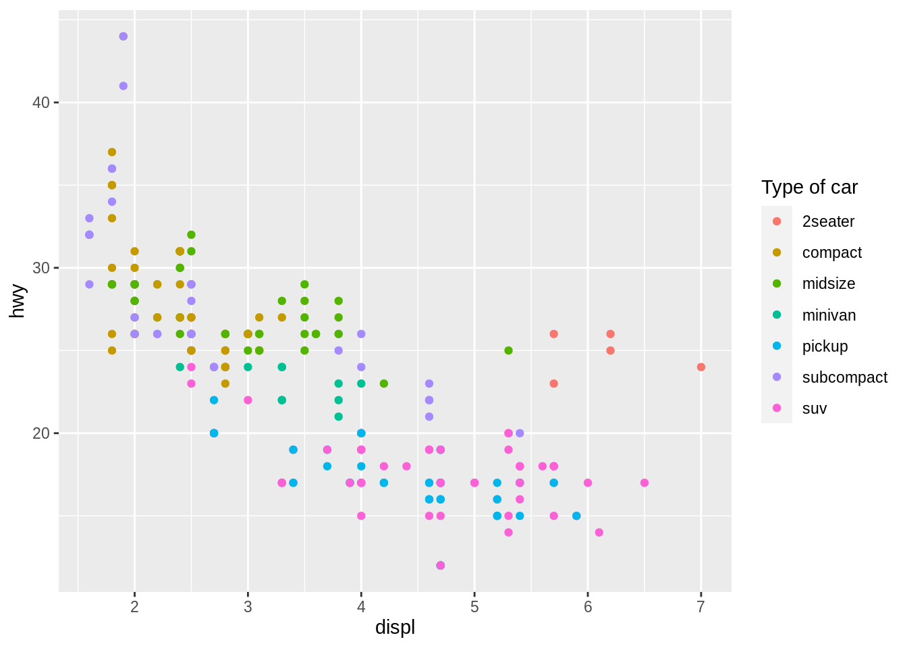
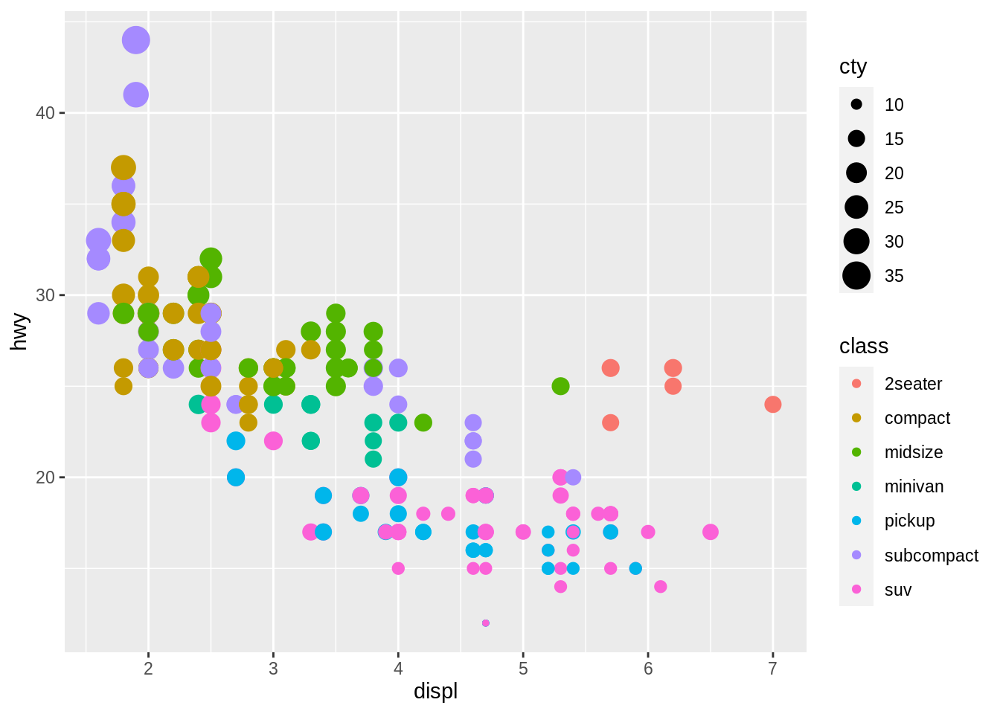
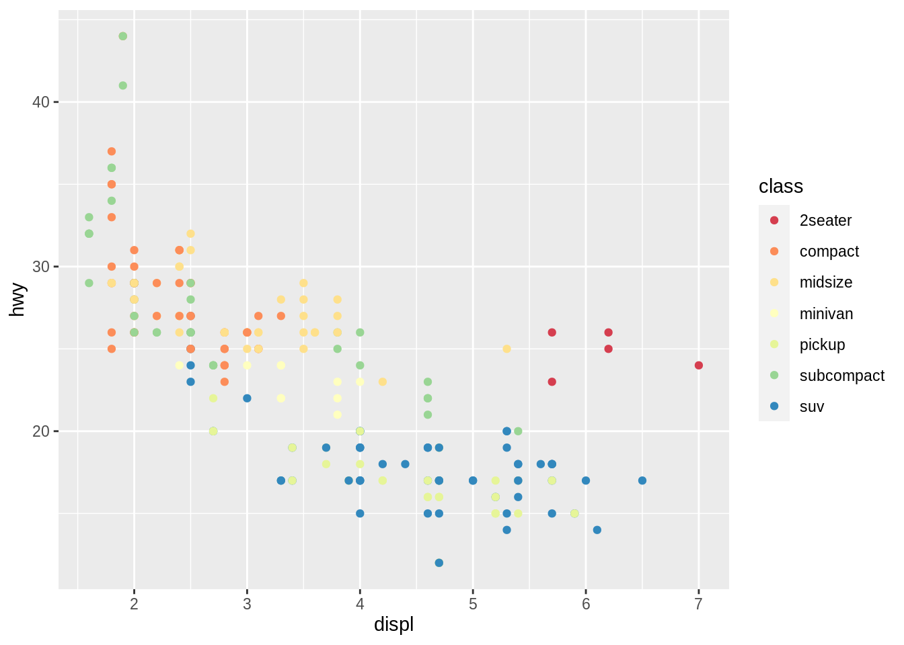
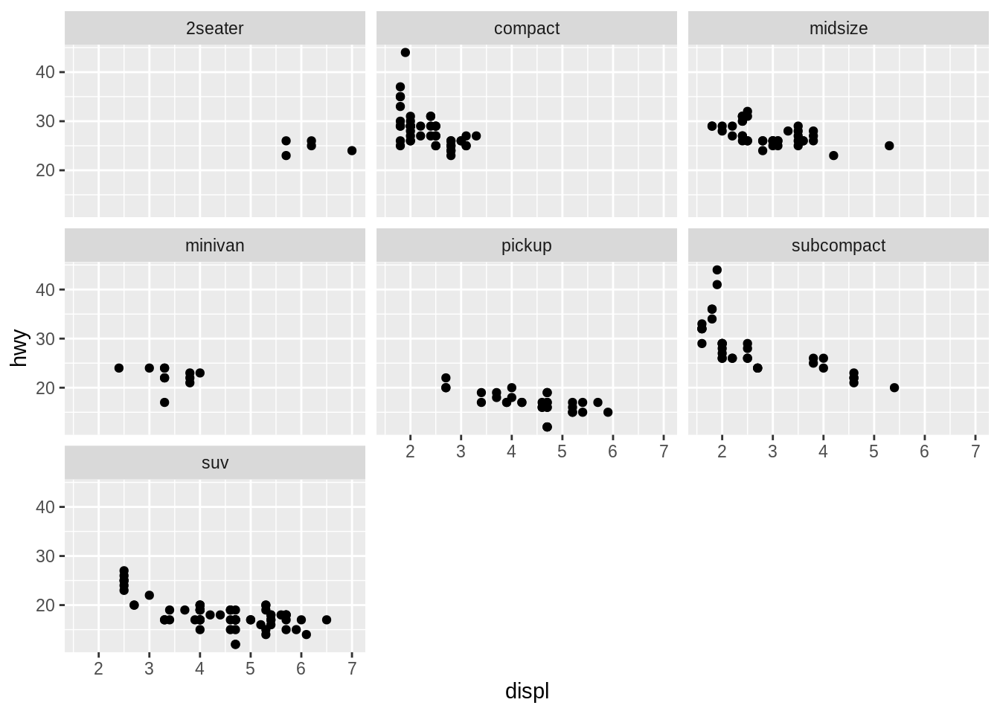
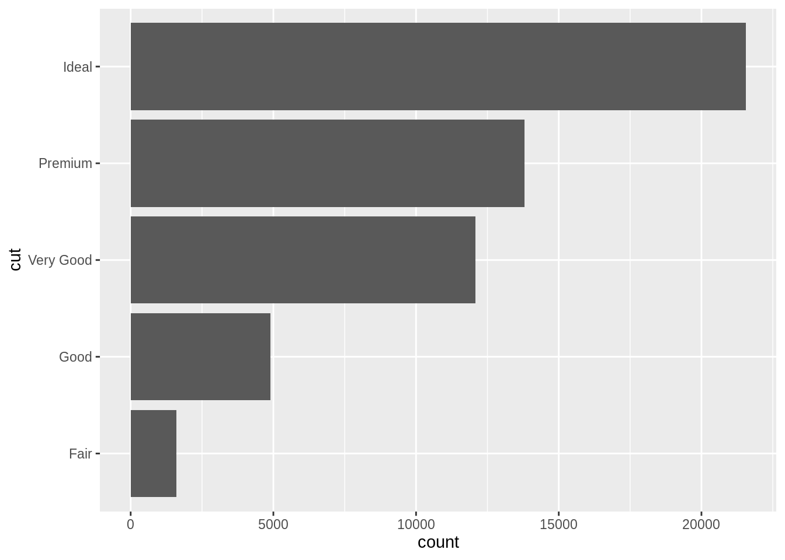
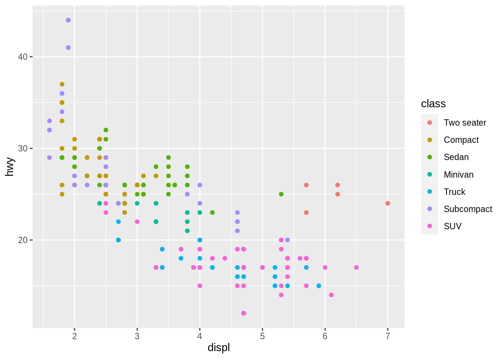
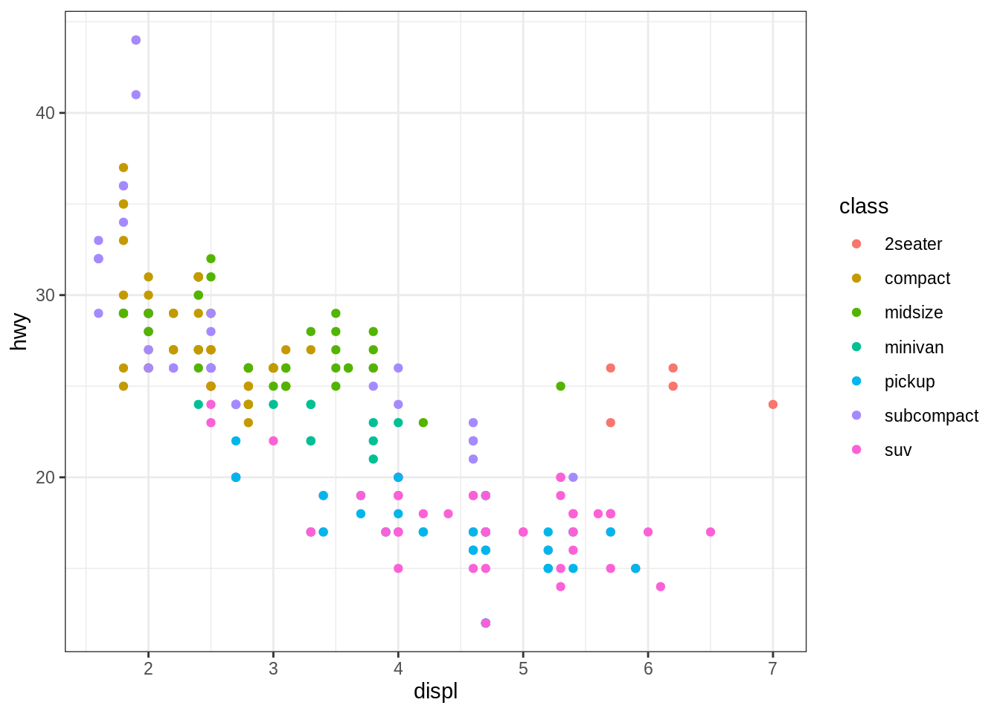
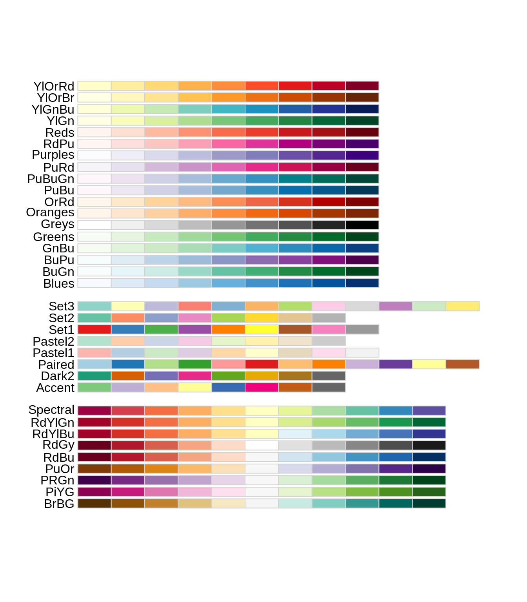
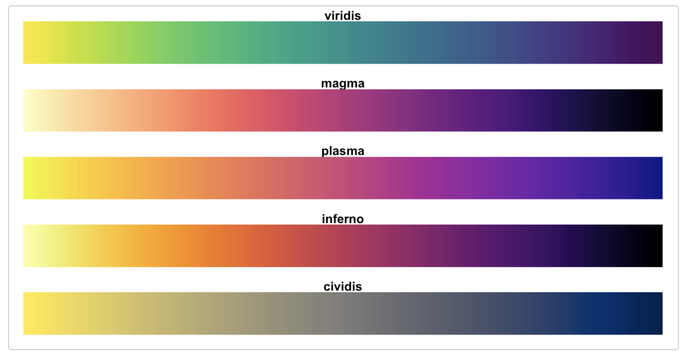
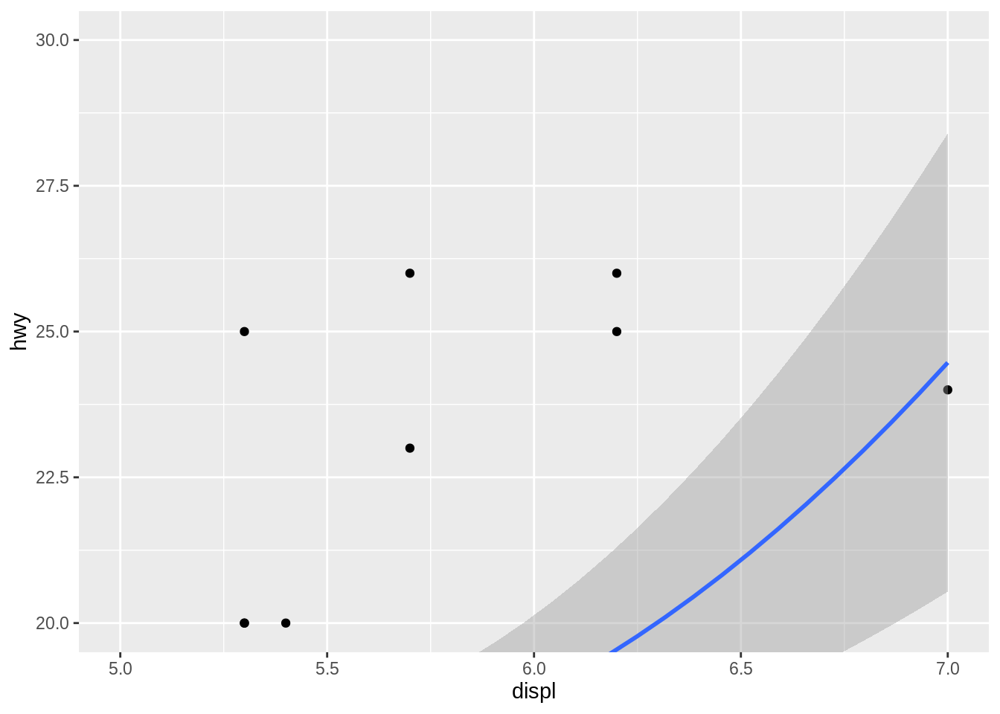

9 Visualize Data
- Make a plot
- Make a specific “type” of plot, like a line plot, bar chart, etc.
- Add a variable to a plot as a color, shape, etc.
- Add multiple layers to a plot
- Subdivide a plot into multiple subplots
- Add a title, subtitle, or caption to a plot
- Change the axis labels of a plot
- Change the title of a legend
- Change the names within a legend
- Remove the legend from a plot
- Change the appearance or look of a plot
- Change the colors used in a plot
- Change the range of the x or y axis
- Use polar coordinates
- Flip the x and y axes
What you should know before you begin
The ggplot2 package provides the most important tidyverse functions for making plots. These functions let you use the layered grammar of graphics to describe the plot you wish to make. In theory, you can describe any plot with the layered grammar of graphics.
To use ggplot2, you build and then extend the graph template described in Make a plot. ggplot is loaded when you runlibrary(tidyverse).
9.1 Make a plot
You want to make a plot.
Discussion
Use the same code template to begin any plot:
Replace <DATA>, <X_VARIABLE>, <Y_VARIABLE> and <GEOM_FUNCTION> with the data set, column names within that data set, and geom_function that you’d like to use in your plot. Within ggplot2 code, you should not surround column names with quotes.
The geom_point() function above will create a scatterplot. Notice that some type of plots, like a histogram, will not require a y variable, e.g.
## `stat_bin()` using `bins = 30`. Pick better value with `binwidth`.
+ at the end of the line it follows and never at the beginning of the line that follows it.
9.2 Make a specific “type” of plot, like a line plot, bar chart, etc.
You want to make a plot that is not a scatterplot, as in the Make a plot recipe.

Discussion
The <GEOM_FUNCTION> in the ggplot2 code template determines which type of plot R will draw. So use the geom function that corresponds to the type of plot you have in mind. A complete list of geom functions can be found in the ggplot2 cheatsheet or at the ggplot2 package website.
Geom is short for geometric object. It refers to the type of visual mark your plot uses to represent data.
9.3 Add a variable to a plot as a color, shape, etc.
You want to add a new variable your plot that will appear as a color, shape, line type or some other visual element accompanied by a legend.
Solution

Discussion
In the language of ggplot2, visual elements, like color, are called aesthetics. Use the mapping = aes() argument of ggplot to map aesthetics to variables in the data set, like class and cty, in this example. Separate each new mapping with a comma. ggplot2 will automatically add a legend to the plot that explains which elements of the aesthetic correspond to which values of the variable.
Different types of plots support different types of aesthetics. To determine which aesthetics you may use, read the aesthetics section of the help page of the plot’s geom function, e.g. ?geom_point.
aes() helper function, which preprocesses them to pass to ggplot2.
9.4 Add multiple layers to a plot
You want to add multiple layers of data to your plot. For example, you want to overlay a trend line on top of a scatterplot.
Solution
## `geom_smooth()` using method = 'loess' and formula 'y ~ x'
Discussion
To add new layers to a plot, add new geom functions to the end of the plot’s ggplot2 code template. Each new geom will be drawn on top of the previous geoms in the same coordinate space.
+ at the end of the line it follows and never at the beginning of the line that follows it.
When you use multiple geoms, data and mappings defined in ggplot() are applied globally to each geom. You may also define data and mappings within each geom function. These will be applied locally to only the geom in which they are defined. For that geom, local mappings will override and extend global ones, e.g.
ggplot(data = mpg, mapping = aes(x = displ, y = hwy)) +
geom_point(mapping = aes(color = class)) +
geom_smooth()## `geom_smooth()` using method = 'loess' and formula 'y ~ x'
9.5 Subdivide a plot into multiple subplots
You want to make a collection of subplots that each display a different part of the data set.
Solution

Discussion
In ggplot2 vocabulary, subplots are called facets. Each subplot shares the same x and y variables, which facilitates comparison.
Use one of two functions to facet your plot.facet_wrap() creates a separate subplot for each value of a variable. Pass the variable to facet_wrap() preceded by a ~.
facet_grid() creates a grid of facets based on the combinations of values of two variables. Pass facet_grid() two variables separated by a ~, e.g.

9.6 Add a title, subtitle, or caption to a plot
You want to add a title and subtitle above your plot, and/or a caption below it.
Solution
ggplot(data = mpg, mapping = aes(x = displ, y = hwy)) +
geom_point() +
labs(
title = "Engine size vs. Fuel efficiency",
subtitle = "Fuel efficiency estimated for highway driving",
caption = "Data from fueleconomy.gov"
)
Discussion
The labs() function adds labels to ggplot2 plots. Each argument of labs() is optional. Labels should be provided as character strings.
9.7 Change the axis labels of a plot
You want to change the names of the x and y axes.
Solution
ggplot(data = mpg, mapping = aes(x = displ, y = hwy)) +
geom_point() +
labs(
title = "Engine size vs. Fuel efficiency",
x = "Engine Displacement (L)",
y = "Fuel Efficiency (MPG)"
)
Discussion
By default, ggplot2 labels the x and y axes with the names of the variables mapped to the axes. Override this with the x and y arguments of labs().
9.8 Change the title of a legend
You want to change the title of a legend.
Solution
ggplot(data = mpg, mapping = aes(x = displ, y = hwy, color = class)) +
geom_point() +
labs(color = "Type of car")
Discussion
ggplot2 creates a legend for each aesthetic except for x, y, and group. By default, ggplot2 labels the legend with the name of the variable mapped to the aesthetic. To override this, add the labs() function to your template and pass a character string to the aesthetic whose legend you want to relabel.
Use a \n to place a line break in the title, e.g.
ggplot(data = mpg, mapping = aes(x = displ, y = hwy, color = class)) +
geom_point() +
labs(color = "Type of\ncar")
9.9 Change the names within a legend
You want to change the value labels that appear within a legend.
Solution
Discussion
To change the labels within a legend, you must interact with ggplot2’s scale system. To do this:
- Determine which scale the plot will use. This will be a function whose name is composed of
scale_, followed by the name of an aesthetic, followed by_, followed by an identifier, oftendiscreteorcontinuous. - Explicitly add the scale to your code template
- Set the labels argument of the scale to a vector of character strings, one for each label in the legend.
9.10 Remove the legend from a plot
You want to remove the legend from a ggplot2 plot.
Solution
ggplot(data = mpg, mapping = aes(x = displ, y = hwy, color = class)) +
geom_point() +
theme(legend.position = "none")
Discussion
To suppress legends, add theme() to the end of your ggplot2 code template. Pass it the argument legend.position = "none".
9.11 Change the appearance or look of a plot
You want to change the appearance of the non-data elements of your plot.
Solution

Discussion
The appearance of the non-data elements of a ggplot2 plot are controlled by a theme. To give your plot a theme, add a theme function to your ggplot2 code template. ggplot2 comes with nine theme functions, theme_grey(), theme_bw(), theme_linedraw(), theme_light(), theme_dark(), theme_minimal(), theme_classic(), theme_void(), theme_test(), and more can be loaded from the ggthemes package.
Use the theme() function to tweak individual elements of the active theme as in Remove the legend from a plot.
9.12 Change the colors used in a plot
You want to change the colors that you plot uses to display data.
Solution
ggplot(data = mpg, mapping = aes(x = displ, y = hwy, color = class)) +
geom_point() +
scale_color_brewer(palette = "Spectral")
Discussion
ggplot2 uses colors for both the color and fill aesthetics. Determine which one you are using, and then add a new color of fill scale with ggplot2’s scale system. See the ggplot2 website for a list of available scales. Additional scales are available in the ggthemes package.
scale_color_brewer()/scale_fill_brewer() (for discrete data) and scale_color_distill()/scale_fill_distill() (for continuous data) are popular choices for pleasing color schemes. Each takes a palette argument that can be set to the name of any of the scales displayed below

scale_color_viridis_d()/scale_fill_viridis_d() (for discrete data) and scale_color_viridis()_c/scale_fill_viridis()_c (for continuous data) are another popular choice for continuous data. Each takes an option argument that can be set to one of the palette names below.

The ggsci and wesanderson packages also provide popular color scales.
9.13 Change the range of the x or y axis
You want to change the range of the x or y axes, effectively zooming in or out on your data.
Solution
ggplot(data = mpg, mapping = aes(x = displ, y = hwy)) +
geom_point() +
geom_smooth() +
coord_cartesian(xlim = c(5, 7), ylim = c(20, 30)) ## `geom_smooth()` using method = 'loess' and formula 'y ~ x'
Discussion
Each ggplot2 plot uses a coordinate system, which can be set by adding a coord_ function to the ggplot2 code template. If you do add a coord_ function, ggplot2 will use coord_cartesian() whihc provides a cartesian coordinate system.
To change the range of a plot, set one or both of the xlim and ylim arguments of its coord_ function. Each argument taxes a vector of length two: the minimum and maximum values for the range of the x or y axis.
9.14 Use polar coordinates
You want to make a polar plot, e.g. one that uses polar coordinates.
Solution

Discussion
To draw a plot in a polar coordinate system, add coord_polar() to the ggplot2 code template. Set the theta argument to "x" or "y" to indicate which axis should be mapped to the angle of the polar coordinate system (defaults to "x").
9.15 Flip the x and y axes
You want to flip the plot along its diagonal, swapping the locations of the x and y axes.

Discussion
To flip a plot, add coord_flip() to the ggplot2 code template. This swaps the locations of the x and y axes and keeps the correct orientation of all words.
coord_flip() has a different effect from merely exchanging the x and y variables. For example, you can use it to make bars and boxplots extend horizontally instead of vertically.